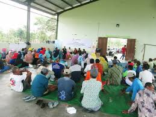
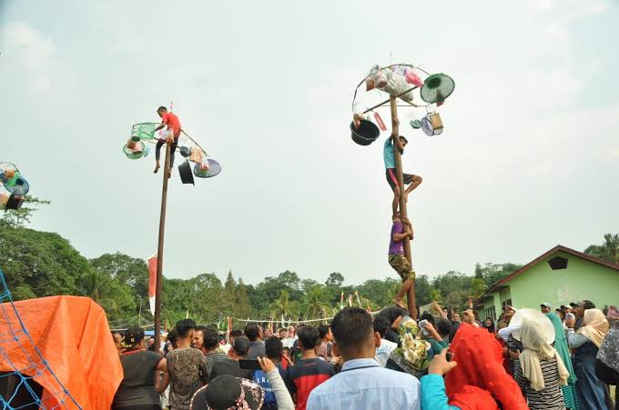
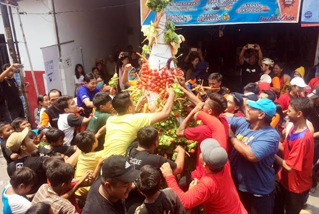
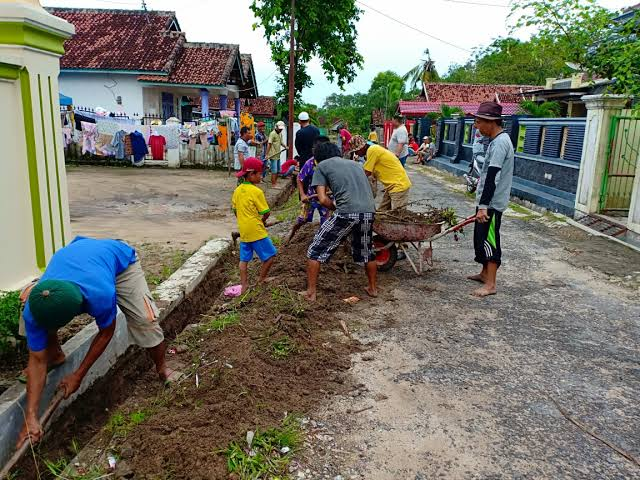
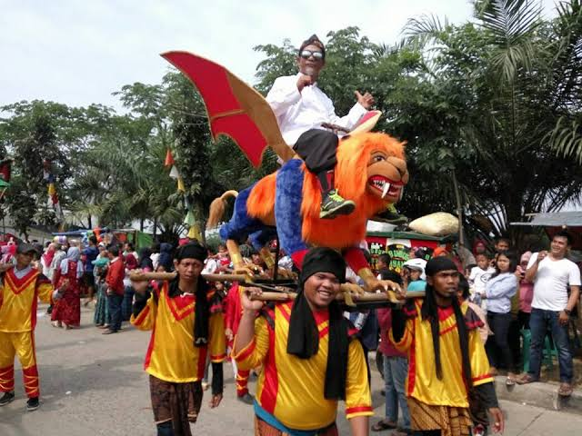

Galeri
Kegiatan Desa Srati
Sosial & Budaya
Kegiatan kebudayaan antara lain arak-arakan kuda lumping dan anak-anak sekolah dasar pada peringatan 17 Agustus. Sedekahan Bumi pada Bulan Suro. Sadranan yang biasa diisi dengan hiburan wayang kulit. serta kegiatan masyarakat lainya yang bersifat gotong royong.
Penyuluhan kesehatan merupakan kegiatan penambahan pengetahuan yang diperutukkan bagi masyarakat melalui penyebaran pesan.[1] Tujuan kegiatan penyuluhan kesehatan yaitu untuk mencapai tujuan hidup sehat dengan cara mempengaruhi prilaku masyarakat baik itu secara individu atau pun kelompok dengan menyampaian pesan.[1] Penyuluhan kesehatan merupakan gabungan dari berbagai kegiatan dan kesempatan yang berlandaskan prinsip-prinsip belajar sehingga harapannya dengan adanya penyuluhan kesehatan dapat membuat masyarakat lebih sadar akan pentingnya pola kehidupan yang sehat.
Inilah salah satu tradisi paling legendaris, setiap peringatan Hari Kemerdekaan Indonesia, panjat pinang. Lomba panjat pinang ini selalu menjadi bagian Hari Kemerdekaan Indonesia, digelar di berbagai penjuru Indonesia. Tidak hanya di pusat kota atau keramaian seperti Ancol, tetapi hingga di kampung-kampung untuk menyambut kemeriahan perayaan Kemerdekaan. Lomba panjat pinang benar-benar memeriahkan suasana perayaan dan selalu menjadi keriaan yang paling dinanti di tiap 17 Agustus. Kemeriahan, kelucuan, kegigihan dan kekompakan diperlihatkan pada kegiatan tersebut. Bahkan setelah perjuangan memeras keringat dan tenaga tak membuahkan hadiah yang diincar pun, lomba panjat pinang tetap memberi kegembiraan.
Sedekah bumi adalah suatu upacara adat yang melambangkan rasa syukur manusia terhadap Tuhan Yang Maha Esa yang telah memberikan rezeki melalui bumi berupa segala bentuk hasil bumi.Upacara ini sebenarnya sangat populer di Indonesia, khususnya di Pulau Jawa.
Gotong royong adalah suatu kegiatan yang dilakukan secara bersama-sama dan bersifat suka rela agaer kegiatan yang dikerjakan dapat berjalan dengan lancer, mudah dan ringan. Contoh kegiatan yang dapat dilakukan secara bergotong royong antara lain pembangunan fasilitas umum dan membersihkan lingkungan sekitar.
Arak-arakan yang dilaksanakan di desa biasanya hanya diselenggarakan untuk merayakan dan meramaikan Hari Besar Islam.